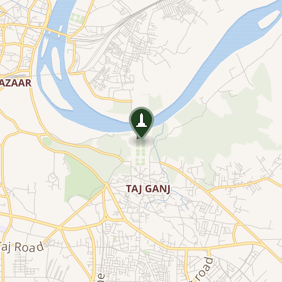
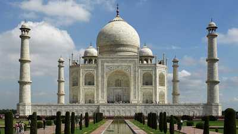
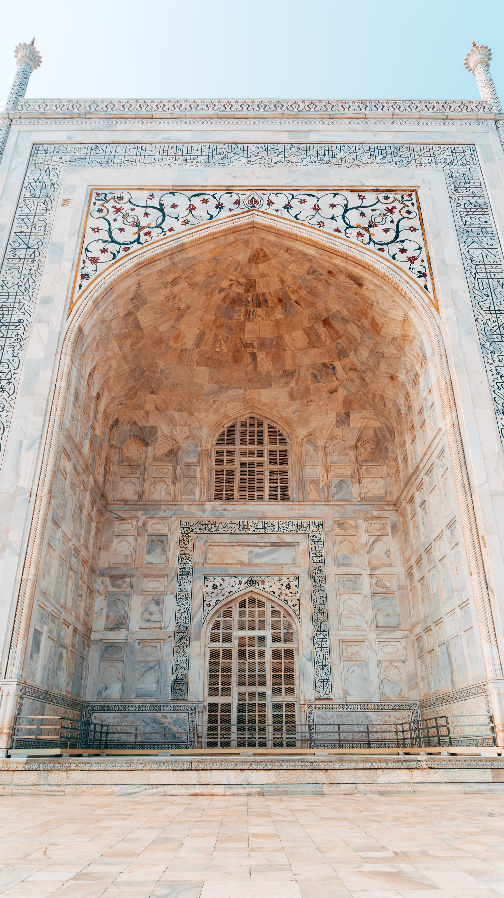
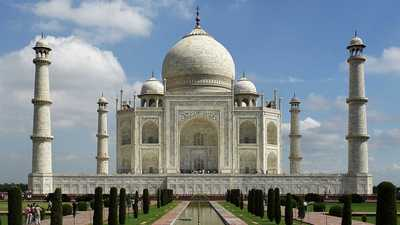
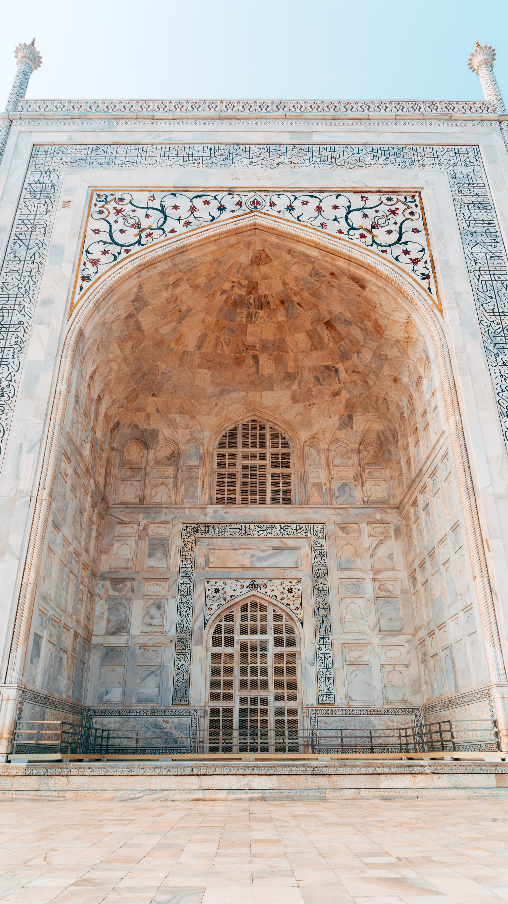

Taj Mahal (en devanagari ताजमहल, en persan تاج محل qui signifie « la couronne du palais » — mais ce nom peut aussi être vu comme une corruption de Mumtaz Mahal1) est situé à Agra, au bord de la rivière Yamuna, dans l'État de l'Uttar Pradesh, en Inde2. C'est un mausolée de marbre blanc construit par l'empereur moghol musulman Shâh Jahân en mémoire de son épouse Arjumand Bânu Begam3, aussi connue sous le nom de Mumtaz Mahal, qui signifie en persan « lumière du palais ». Celle-ci meurt le 17 juin 1631 en donnant naissance à leur quatorzième enfant, alors qu'elle accompagnait son mari pendant une campagne militaire. Elle trouve une première sépulture sur place dans le jardin Zainabad à Burhanpur. La construction du mausolée commence en 1631 et s'achève dans sa plus grande partie en 16484. Son époux, mort le 31 janvier 1666, est inhumé auprès d'elle. Le Taj Mahal est considéré comme un joyau de l'architecture moghole, un style qui combine des éléments architecturaux des architectures islamique, iranienne, ottomane et indienne5,6. Il est considéré que l'architecte principal fut Ustad Ahmad Lahauri7,8 de Lahorek 1.

affluent du Gange, à l'est du centre-ville, dans une zone relativement peu urbanisée hormis sur son côté sud où le site est adjacent au quartier de Kaserat Bazar.

Le chroniqueur officiel de Shâh Jahân, Abdul Hamid Lahori indique que le Taj Mahal est achevé à la fin de 1643 ou au début de 1644. Mais à l'entrée principale une inscription indique que la construction s'est achevée en 1648. L'État de l'Uttar Pradesh, qui a célébré officiellement le 350e anniversaire de l'édifice en 2004, affirme quant à lui que les travaux se sont achevés en 1654. Le chantier a mobilisé 22 000 esclaves9 ainsi que des des maîtres artisans venus d'Europe et d'Asie centrale.
Il est considéré que l'architecte principal fut Ustad Ahmad Lahauri7,8 de Lahorek 1.


Localisation
Le Taj Mahal se trouve à Agra, dans l'État d'Uttar Pradesh dans le nord de l'Inde. Le mausolée est édifié au sud d'un méandre de la Yamuna,affluent du Gange, à l'est du centre-ville, dans une zone relativement peu urbanisée hormis sur son côté sud où le site est adjacent au quartier de Kaserat Bazar.
Histoire
Sa construction commence en 1632. Cependant, il demeure une incertitude sur la date exacte de la fin des travaux.Le chroniqueur officiel de Shâh Jahân, Abdul Hamid Lahori indique que le Taj Mahal est achevé à la fin de 1643 ou au début de 1644. Mais à l'entrée principale une inscription indique que la construction s'est achevée en 1648. L'État de l'Uttar Pradesh, qui a célébré officiellement le 350e anniversaire de l'édifice en 2004, affirme quant à lui que les travaux se sont achevés en 1654. Le chantier a mobilisé 22 000 esclaves9 ainsi que des des maîtres artisans venus d'Europe et d'Asie centrale.
Il est considéré que l'architecte principal fut Ustad Ahmad Lahauri7,8 de Lahorek 1.

Tourisme
Chaque année, le monument attire de deux à quatre millions de touristes, dont 200 000 étrangers. Un système de prix est mis en place avec un tarif d'entrée faible pour les Indiens et un prix vingt-cinq fois plus élevé pour les étrangers31. En octobre 2000, le prix est triplé afin de réduire la surfréquentation touristique32. Les touristes visitent principalement le site lors des mois plus frais d'octobre, novembre et décembre. Le trafic routier est limité près du Taj Mahal, les touristes devant soit marcher à partir du parking réservé aux bus de tourisme ou l'une des trois entrées du site (Est-Sud-Ouest), soit recourir aux services des chameliers présents ou aux auto-rickshaws électriques. La cour nord, appelée « Khawasspuras », est restaurée pour être utilisée en tant que nouvel office de tourisme. Les historiens de l'art présentent parfois le mausolée d'Itimâd-ud-Daulâ comme un « brouillon » du Taj Mahal, ce qui explique qu'il soit appelé « petit Taj » dans la littérature touristique33.